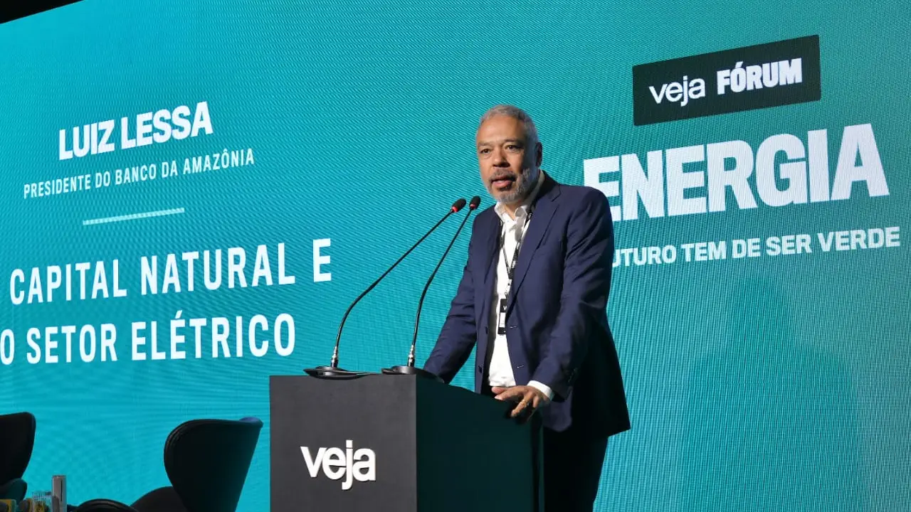

Fonte: Por Felipe Erlich em Veja Abril.
Presidente da instituição defende transição de usinas de óleo diesel para fontes menos poluentes, como gás natural; financiadores internacionais são céticos.
Conectar comunidades amazônicas ao sistema elétrico — e prezando pela sustentabilidade ambiental — é um dos principais desafios da região. “Na região Norte, não temos energia eólica, porque os ventos não são tão favoráveis, e mesmo a energia solar não é muito bem desenvolvida”, diz Luiz Lessa, presidente do Banco da Amazônia, durante o Veja Fórum de Energia Elétrica, realizado nesta segunda-feira, 29, em São Paulo.
O executivo do banco regional defende que o segmento progrida de maneira pragmática, mesmo que isso signifique não romper com os combustíveis fósseis de maneira imediata.
Cerca de 180 usinas elétricas movidas a óleo diesel — uma fonte extremamente poluente — operam na Amazônia, segundo Lessa. A transição dessas usinas para geradores de energia via gás natural já seria um grande avanço — mesmo que ainda poluente — na avaliação do banco de desenvolvimento, mas a proposta encontra resistência de financiadores internacionais, como o Banco Interamericano de Desenvolvimento (BID), de acordo com o banqueiro. “Essas usinas queimando óleo diesel dentro da floresta são inadmissíveis”, diz.
O interior da Amazônia apresenta uma grande dificuldade de conexão ao sistema elétrico nacional. A questão é logística e de infraestrutura, dada a geografia da região. Nesse sentido, o Banco da Amazônia aposta na geração distribuída de energia, por exemplo, por comunidades ribeirinhas. “Mesmo que a gente termine a conexão entre Boa Vista (RR) e Manaus (AM), isso não resolve o problema de quem está no interior da Amazônia”, diz Lessa. O banco possui programas de financiamento de painéis solares para ribeirinhos mirando atender essa demanda.